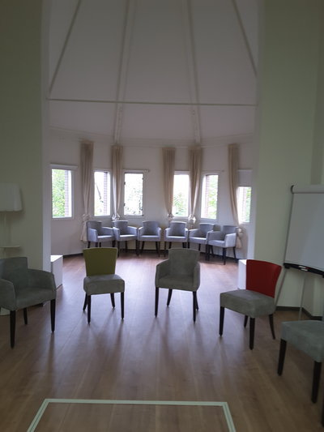

Op "Open Monumentendagen" is de Toren op zondag geopend van 11.00 tot 17.00 uur. Het is dan mogelijk om de toren te beklimmen en vanuit de galmgaten van het prachtige uitzicht over de IJssel te genieten.
Iedere zaterdag om 18.00 uur worden de 3 monumentale klokken geluid. Zo ook bij bijzondere gebeurtenissen zoals de jaarwisseling, koninginnedag en de kerstnacht.
Op verzoek van nabestaanden kan er geluid worden bij een begrafenis. Voor dit luiden wordt een vergoeding van € 50,- in rekening gebracht ; voor het luiden bij een uitvaart van een overleden donateur worden geen kosten in rekening gebracht, een vrije gift wordt uiteraard op prijs gesteld.
Bij bijzondere feestelijkheden of gebeurtenissen worden de beide vlaggen uit de Toren gehangen.
Rond de kerstdagen is het inmiddels een traditie om een kerstboom voor de toren te plaatsen. Deze boom wordt sinds jaar en dag geschonken door de Stichting Twickel, eigenaresse van het Hof te Dieren.
De Toren beschikt op de eerste verdieping over een bijzondere ruimte voor het houden van vergaderingen en bijeenkomsten.
Meer informatie over verhuur opvragen|  |